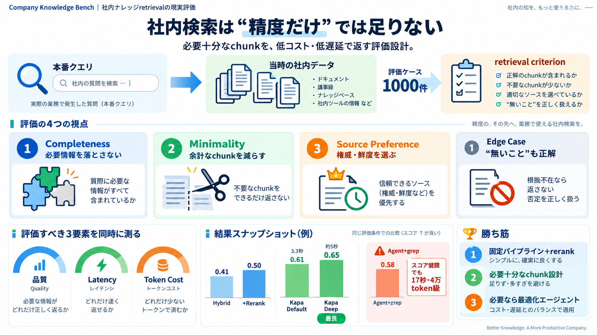

RAG Techniques Compared: A Practical Guide to Retrieval Augmented Generation in 2026
RAG is still the dominant architecture for grounding LLMs with external knowledge in 2026 — but the landscape has fractu…

RAG is still the dominant architecture for grounding LLMs with external knowledge in 2026 — but the landscape has fractu…
Most evaluations start with a simple “vibe check”, where you test out some domain-specific questions and see if your app…
k = the number of retrieved results. Evaluation was conducted using various k values (i.e., the number of retrieved resu…
over Qdrant. Both retrieve a fixed top-10 document set per query. Bash Agent retrieval represents a more recent approach…
Multi-hop questions, where two or more documents must be combined to form an answer, fared even worse. Only 12% of syste…